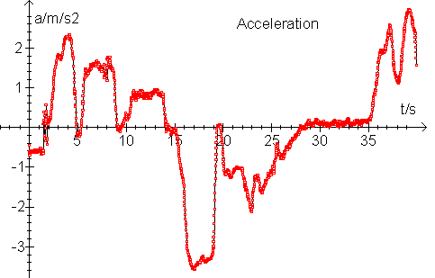
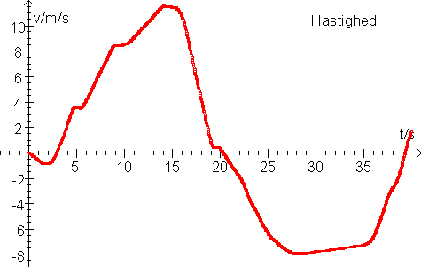
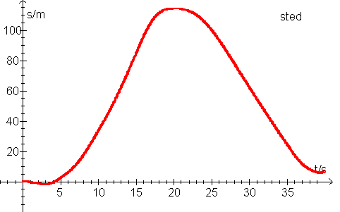

LabPro med accelerometer sonde er placeret i en bil. Målingerne startes og bilen startes. Der er en del støj på målingerne, så den viste acceleration er udglattet. Desuden er der nulpunktsfejl på accelerationen, men alligevel!
Giv en beskrivelse af hver af de 3 grafer: Hvordan kørte bilen?
Graf 1:

Graf 2:

Graf 3:

Carl Hemmingsen